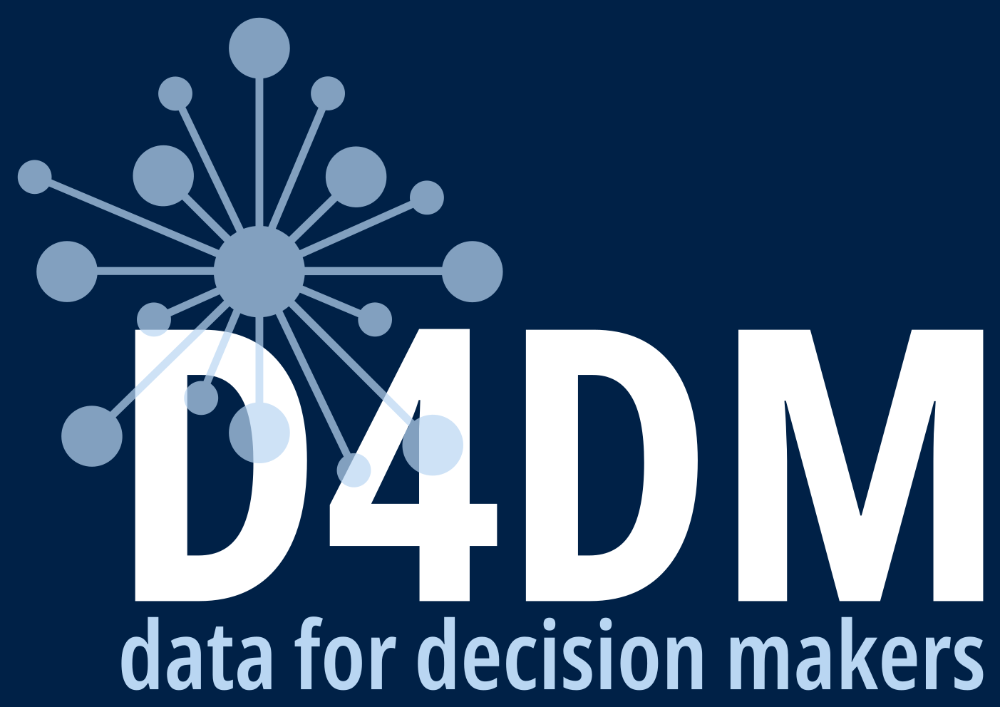

Data-driven Decision-making
Across this course we have learned to collect, structure, clean, store, analyse, and govern data.
For all of that effort to pay off, our data must be able to outlive the moment it was created so that it can be found, understood, and reused by others (and by our future selves).
Why data reuse matters
What FAIR means
Findable, Accessible, Interoperable, Reusable
FAIR is not the same as Open
Making your own data more FAIR
FAIR in the context of this course
Most data is collected once, used once, and then lost either on a laptop, in an email attachment, in a folder no one can find.
Decision makers repeatedly re-collect data that already exists because they cannot find, access, or understand what was gathered before.
Data that cannot be reused is a wasted investment.
The volume of data is growing far faster than any team of people can read, catalogue, and connect by hand.
The FAIR principles were written so that computers can help us find and combine data with as little human effort as possible.
A set of guiding principles published in 2016 by a broad group of researchers, publishers, and funders (Wilkinson et al., Scientific Data).
Now stewarded by the GO FAIR initiative.
FAIR describes four qualities that make data a lasting, reusable asset:
Findable
Accessible
Interoperable
Reusable
Metadata is data about data — the who, what, when, where, why, and how of a dataset.
Notice that most of the FAIR principles refer to (meta)data. Good metadata is what makes data findable, understandable, and reusable.
If you cannot find it, nothing else matters.
F1. (Meta)data are assigned a globally unique and persistent identifier.
F2. Data are described with rich metadata.
F3. Metadata clearly and explicitly include the identifier of the data they describe.
F4. (Meta)data are registered or indexed in a searchable resource.
Give every dataset a permanent, unique name or identifier (e.g. a DOI).
Describe it richly: title, authors, date, geography, variables, methods.
Put it somewhere searchable such as a data catalogue or repository, not a personal folder.
Once found, how do you get it?
A1. (Meta)data are retrievable by their identifier using a standardised communications protocol.
A1.1. The protocol is open, free, and universally implementable.
A1.2. The protocol allows for authentication and authorisation, where necessary.
A2. Metadata are accessible, even when the data are no longer available.
Use standard, open ways to retrieve data (a web link that works, not “email me for the file”).
Where data is sensitive, provide a clear, documented process for requesting access.
Keep the metadata alive even if the data is retired or restricted.
Can it be combined with other data?
I1. (Meta)data use a formal, accessible, shared, and broadly applicable language for knowledge representation.
I2. (Meta)data use vocabularies that follow FAIR principles.
I3. (Meta)data include qualified references to other (meta)data.
Save data in open, common formats (CSV, not a proprietary binary).
Use agreed vocabularies and codes such as standard country codes, units, category labels.
Link related datasets and definitions explicitly.
From our spreadsheets session
Be consistent
One thing per cell
Dates as YYYY-MM-DD
Save as plain text
Create a data dictionary
FAIR equivalent
Interoperable vocabularies (I2)
Machine-readable data
Shared standard (ISO 8601)
Open format (A1.1, I1)
Rich metadata (F2, R1)
The ultimate goal — can it be trusted and used again?
R1. (Meta)data are richly described with a plurality of accurate and relevant attributes.
R1.1. (Meta)data are released with a clear and accessible data usage licence.
R1.2. (Meta)data are associated with detailed provenance.
R1.3. (Meta)data meet domain-relevant community standards.
Document how, when, why, and by whom the data was produced (provenance).
Attach a clear licence so others know what they may do with it.
Follow the standards of your sector so the data fits existing workflows.
Open data = free for anyone to use, with no or minimal restriction.
FAIR data = well-described, well-managed, and reusable under clearly stated conditions which may include restrictions.
Data can be FAIR without being fully open. Sensitive health, financial, or personal data can and should be FAIR while remaining protected.
Name it uniquely , e.g., a persistent identifier, not just a filename.
Describe it with rich metadata and a data dictionary.
Store it somewhere searchable such as a catalogue or repository.
Use open formats and standard codes such as CSV, ISO dates, agreed vocabularies.
State the access rules such as who can use it and how.
Add a licence and record its provenance.
FAIR is not pass/fail; datasets are more or less FAIR.
You do not need to do everything at once. Any improvement makes data more reusable.
Start with the cheapest, highest-impact steps: good metadata and consistent, open formats.
FAIR is the practical, dataset-level expression of the data governance principles we discussed:
accountability, documentation, clear access rules, and long-term stewardship applied to every dataset you hold.
FAIR = Findable, Accessible, Interoperable, Reusable.
It exists so data can be reused by humans and machines, long after collection.
Metadata is what carries most of the FAIR qualities.
FAIR is not the same as Open — sensitive data can be FAIR and protected.
Almost everything in this course — tidy data, dictionaries, consistent naming, governance — has been building toward FAIR.
Take one dataset your team currently holds. Score it against the FAIR checklist:
which principles does it already meet, and what are the two cheapest changes that would make it more FAIR?

{kind=link}